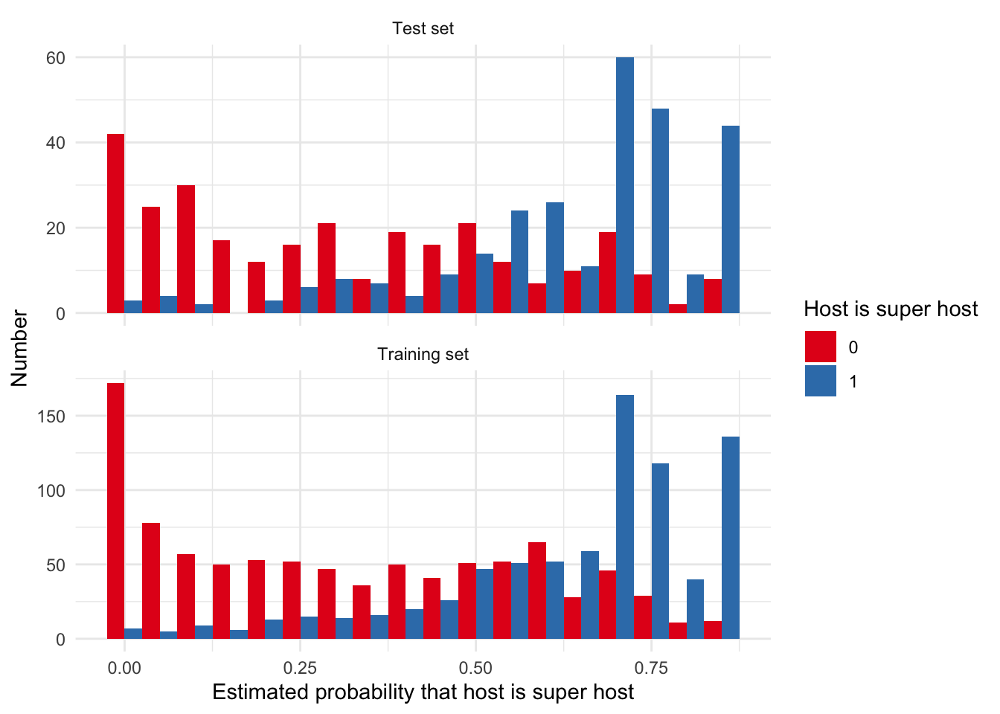
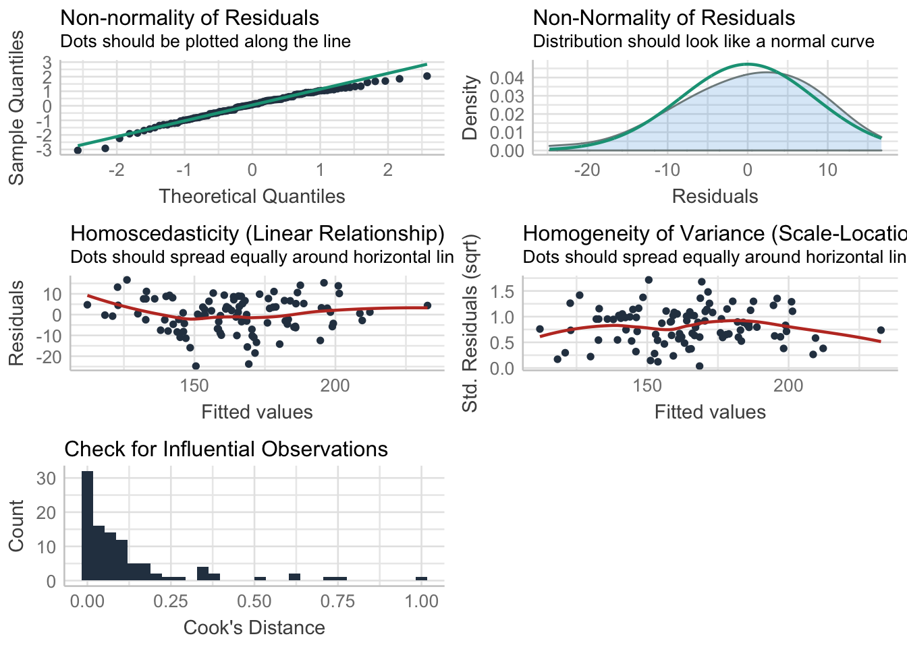

Chapter 14 It’s Just A Linear Model
Last updated: 16 March 2021.
Required reading
- Greenland, Sander, Stephen J. Senn, Kenneth J. Rothman, John B. Carlin, Charles Poole, Steven N. Goodman, and Douglas G. Altman, 2016, ‘Statistical tests, P values, confidence intervals, and power: a guide to misinterpretations,’ European journal of epidemiology, 31, no. 4, pp. 337-350.
- James, Gareth, Daniela Witten, Trevor Hastie and Robert Tibshirani, 2017, An Introduction to Statistical Learning with Applications in R, 1st Edition, Chapters 3 and 4.1-4.3., https://www.statlearning.com.
- Obermeyer, Z., Powers, B., Vogeli, C., & Sendhill, M., 2019, ‘Dissecting racial bias in an algorithm used to manage the health of populations,’ Science, (366): 447-453.
- Wickham, Hadley, and Garrett Grolemund, 2017, R for Data Science, Chapter 23, https://r4ds.had.co.nz/.
- Zook M, Barocas S, boyd d, Crawford K, Keller E, Gangadharan SP, et al. (2017) ‘Ten simple rules for responsible big data research,’ PLoS Comput Biol 13(3): e1005399. https://doi.org/10.1371/journal.pcbi.1005399
Recommended reading
- Angrist, Joshua D., and Jörn-Steffen Pischke, 2008, Mostly harmless econometrics: An empiricist’s companion, Princeton University Press, Chapter 3.4.3.
- Cunningham, Scott, Causal Inference: The Mixtape, Chapter 2, Yale University Press, https://mixtape.scunning.com.
- ElHabr, Tony, 2019, ‘A Bayesian Approach to Ranking English Premier League Teams (using R),’ https://tonyelhabr.rbind.io/post/bayesian-statistics-english-premier-league/.
- Ioannidis, John PA, 2005, ‘Why most published research findings are false,’ PLoS medicine, 2, no. 8, e124.
- Pavlik, Kaylin, 2018, ‘Exploring the Relationship Between Dog Names and Breeds,’ https://www.kaylinpavlik.com/dog-names-tfidf/.
- Pavlik, Kaylin, 2019, ‘Understanding + classifying genres using Spotify audio features,’ https://www.kaylinpavlik.com/classifying-songs-genres/.
- Silge, Julia, 2019, ‘Modeling salary and gender in the tech industry,’ https://juliasilge.com/blog/salary-gender/.
- Silge, Julia, 2019, ‘Opioid prescribing habits in Texas,’ https://juliasilge.com/blog/texas-opioids/.
- Silge, Julia, 2019, ‘Tidymodels,’ https://juliasilge.com/blog/intro-tidymodels/.
- Silge, Julia, 2020, ‘#TidyTuesday hotel bookings and recipes,’ https://juliasilge.com/blog/hotels-recipes/.
- Silge, Julia, 2020, ‘Hyperparameter tuning and #TidyTuesday food consumption,’ https://juliasilge.com/blog/food-hyperparameter-tune/.
- Taddy, Matt, 2019, Business Data Science, Chapters 2 and 4.
- Wasserstein, Ronald L. and Nicole A. Lazar, 2016, ‘The ASA Statement on p-Values: Context, Process, and Purpose,’ The American Statistician, 70:2, 129-133, DOI: 10.1080/00031305.2016.1154108.
Fun reading
- Chellel, Kit, 2018, ‘The Gambler Who Cracked the Horse-Racing Code,’ Bloomberg Businessweek, 3 May, https://www.bloomberg.com/news/features/2018-05-03/the-gambler-who-cracked-the-horse-racing-code.
Key concepts/skills/etc
- Simple and multiple linear regression.
- Logistic and Poisson regression.
- The key role of uncertainty.
- Threats to validity of inferences
- Overfitting.
Key libraries
broomhuxtablerstanarmtidymodelstidyverse
Key functions
broom::augment()broom::glance()broom::tidy()glm()huxtable::huxreg()lm()parsnip::fit()parsnip::linear_reg()parsnip::logistic_reg()parsnip::set_engine()poissonreg::poisson_reg()rnorm()rpois()rsample::initial_split()rsample::testing()rsample::training()sample()set.seed()summary()
Quiz
- Please write a linear relationship between some response variable, Y, and some predictor, X. What is the intercept term? What is the slope term? What would adding a hat to these indicate?
- What is the least squares criterion? Similarly, what is RSS and what are we trying to do when we run least squares regression?
- What is statistical bias?
- If there were three variables: Snow, Temperature, and Wind, please write R code that would fit a simple linear regression to explain Snow as a function of Temperature and Wind. What do you think about another explanatory variable - daily stock market returns - to your model?
- According to Greenland et al. (2016), p-values test (pick one)?
- All the assumptions about how the data were generated (the entire model), not just the targeted hypothesis it is supposed to test (such as a null hypothesis).
- Whether the hypothesis targeted for testing is true or not.
- A dichotomy whereby results can be declared ‘statistically significant.’
- According to Greenland et al. (2016), a p-value may be small because (select all)?
- The targeted hypothesis is false.
- The study protocols were violated.
- It was selected for presentation based on its small size.
- According to Obermeyer et al. (2019), why does racial bias occur in an algorithm used to guide health decisions in the US (pick one)?
- The algorithm uses health costs as a proxy for health needs.
- The algorithm was trained on Reddit data.
- When should we use logistic regression (pick one)?
- Continuous dependent variable.
- Binary dependent variable.
- Count dependent variable.
- I am interested in studying how voting intentions in the recent US presidential election vary by an individual’s income. I set up a logistic regression model to study this relationship. In my study, one possible dependent variable would be (pick one)?
- Whether the respondent is a US citizen (yes/no)
- The respondent’s personal income (high/low)
- Whether the respondent is going to vote for Trump (yes/no)
- Who the respondent voted for in 2016 (Trump/Clinton)
- I am interested in studying how voting intentions in the recent US presidential election vary by an individual’s income. I set up a logistic regression model to study this relationship. In my study, one possible dependent variable would be (pick one)?
- The race of the respondent (white/not white)
- The respondent’s marital status (married/not)
- Whether the respondent is registered to vote (yes/no)
- Whether the respondent is going to vote for Biden (yes/no)
- Please explain what a p-value is, using only the term itself (i.e. ‘p-value’) and words that are amongst the 1,000 most common in the English language according to the XKCD Simple Writer - https://xkcd.com/simplewriter/. (Please write one or two paragraphs.)
- The mean of a Poisson distribution is equal to its?
- Median.
- Standard deviation.
- Variance.
14.1 Overview
Words! Mere words! How terrible they were! How clear, and vivid, and cruel! One could not escape from them. And yet what a subtle magic there was in them! They seemed to be able to give a plastic form to formless things, and to have a music of their own as sweet as that of viol or of lute. Mere words! Was there anything so real as words?
Oscar Wilde, The Picture of Dorian Gray.
Regression will not sort it out. Regression is indeed an oracle, but a cruel one. It speaks in riddles and delights in punishing us for asking bad questions.
Linear models have been around for a long time, at least since Galton and many others (some of whom were eugenicists) used linear regression in earnest. The generalized linear model framework came into being, in a formal sense, in the 70s with the seminal folks being Nelder and Wedderburn (Nelder and Wedderburn 1972). The idea of generalized linear models is that we broaden the types of outcomes that are allowed. You’re still modelling things as a linear function, but you’re not constrained to an outcome that is normally distributed. The outcome can be anything in the exponential family. A further, well, generalization of generalized linear models is generalized additive models where you’re not generalizing anything to do with the outcome, but instead the structure of the explanatory side, as it were. We’re still explaining the dependent variable as an additive function of bits, but those bits can be functions. This framework, in this way, came about in the 90s, with Hastie and Tibshirani (Hastie and Tibshirani 1990) (fun fact, Tibshirani did a stats masters at Toronto, and was a professor here from 1985 through to 1998!).
It’s important to recognise that when we build models we are not discovering ‘the truth.’ We are using the model to help us explore and understand the data that we have. There is no one best model, there are just useful models that help us learn something about the data that we have and hence, hopefully, something about the world from which the data were generated. Ben Rhodes, who was an Obama staffer, titled his White House memoirs ‘The World as It Is: A Memoir of the Obama White House.’ When we use models, we are similarly trying to understand the world, but as the second part of the title makes clear, there are enormous constraints on the perspective. In the same way that we’d not expect Rhodes to advocate an Australian, Canadian, or even US Republican, perspective about the world, it’s silly to expect one model to be universal.
We use models to understand the world. We poke, push, and test them. We build them and rejoice in their beauty, and then seek to understand their limits and ultimately destroy them. It is this process that is important, it is this process that allows us to better understand the world. McElreath (2020, 19) talks about small and large worlds, saying ‘(a)ll statistical modeling has these two frames: the small world of the model itself and the large world we hope to deploy the model in.’ To what extent does a model trained on the experiences of straight, cis, men, speak to the world as it is? It’s not worthless, but it’s also not unimpeachable. To what extent does the model teach us about the data that we have? To what extent do the data that we have reflect the world for which we would like to draw conclusions? Keep these questions front of mind.
14.2 Simple linear regression

Figure 14.1: Oh my.
Source: Mijke Rhemtulla, 3 March 2020.
14.2.1 Overview
When we have two continuous variables we use simple linear regression. This is based on the Normal (also ‘Gaussian’) distribution. From Pitman (1993, 94) ‘The normal distribution with mean \(\mu\) and standard deviation \(\sigma\) is the distribution over the x-axis defined by areas under the normal curve with these parameters. The equation of the normal curve with parameters \(\mu\) and \(\sigma\), can be written as: \[y = \frac{1}{\sqrt{2\pi\sigma}}e^{-\frac{1}{2}z^2},\] where \(z = (x - \mu)/\sigma\) measures the number of standard deviations from the mean \(\mu\) to the number \(x\).’
In R we can simulate \(n\) data points from the Normal distribution with rnorm().
rnorm(n = 20, mean = 0, sd = 1)## [1] -0.7195816 1.5129669 1.0892396 -0.7643677 1.9500980 2.5212818
## [7] 1.8184490 -0.6686949 1.7879044 1.4109558 1.4115767 -1.4008841
## [13] -0.3295842 -0.2270651 0.7046669 2.1948797 1.0188842 0.5635043
## [19] 0.4671846 -1.0193147It will take a few draws before we get the expected shape.
library(tidyverse)
set.seed(853)
tibble(
number_of_draws = c(
rep.int(x = "2 draws", times = 2),
rep.int(x = "5 draws", times = 5),
rep.int(x = "10 draws", times = 10),
rep.int(x = "50 draws", times = 50),
rep.int(x = "100 draws", times = 100),
rep.int(x = "500 draws", times = 500),
rep.int(x = "1,000 draws", times = 1000),
rep.int(x = "10,000 draws", times = 10000),
rep.int(x = "100,000 draws", times = 100000)),
draws = c(
rnorm(n = 2, mean = 0, sd = 1),
rnorm(n = 5, mean = 0, sd = 1),
rnorm(n = 10, mean = 0, sd = 1),
rnorm(n = 50, mean = 0, sd = 1),
rnorm(n = 100, mean = 0, sd = 1),
rnorm(n = 500, mean = 0, sd = 1),
rnorm(n = 1000, mean = 0, sd = 1),
rnorm(n = 10000, mean = 0, sd = 1),
rnorm(n = 100000, mean = 0, sd = 1))
) %>%
mutate(number_of_draws = as_factor(number_of_draws)) %>%
ggplot(aes(x = draws)) +
geom_density() +
theme_classic() +
facet_wrap(vars(number_of_draws),
scales = "free_y") +
labs(x = 'Draw',
y = 'Density')
When we use simple linear regression, we assume that our relationship is characterised by the variables and the parameters, with any difference, often denoted by \(\epsilon\), between the expectation and the reality being normally distributed.
If we have two variables, \(Y\) and \(X\), then we could characterise the relationship between these as: \[Y \sim \beta_0 + \beta_1 X.\]
There are two coefficients/parameters: the ‘intercept’ is \(\beta_0\), and the ‘slope’ is \(\beta_1\). We are saying that \(Y\) will have some value, \(\beta_0\), even when \(X\) is 0, and that \(Y\) will change by \(\beta_1\) units for every one unit change in \(X\). The language that we use is that ‘X is being regressed on Y.’
We may then take this relationship to the data that we have about the relationship in order to estimate these coefficients for those particular values that we have: \[\hat{y} = \hat{\beta}_0 + \hat{\beta}_1 x.\]
The hats are used to indicate that these are estimated values. We are saying this is a linear regression because we assume that if \(x\) doubles then \(y\) would also double. Linear regressions considers how the average of a dependent variable changes based on the independent variables.
I want to focus on data, so we’ll make this example concrete, by generating some data and then discussing everything in the context of that. The example will be looking at someone’s time for running five kilometers, compared with their time for running a marathon.
set.seed(853)
number_of_observations <- 100
running_data <-
tibble(five_km_time = rnorm(number_of_observations, 20, 3),
noise = rnorm(number_of_observations, 0, 10),
marathon_time = five_km_time * 8.4 + noise,
was_raining = sample(c("Yes", "No"),
size = number_of_observations,
replace = TRUE,
prob = c(0.2, 0.8))
)
running_data %>%
ggplot(aes(x = five_km_time, y = marathon_time)) +
geom_point() +
labs(x = "Five-kilometer time (minutes)",
y = "Marathon time (minutes)") +
theme_classic()
In this set-up we may like to use \(x\), which is the five-kilometer time, to produce estimates of \(y\), which is the marathon time. This would involve also estimating values of \(\beta_0\) and \(\beta_1\), which is why they have a hat on them.
But how should we estimate the coefficients? Even if we impose a linear relationship there are a lot of options (how many straight lines can you fit on a piece of paper?). But clearly some of the fits are not all that great.
One way we may define being great would be to impose that they be as close as possible to each of the \(x\) and \(y\) combinations that we know. There are a lot of candidates for how we define ‘as close as possible,’ but one is to minimise the sum of least squares. To do this we produce our estimates of \(\hat{y}\) based on some estimates of \(\hat{\beta}_0\) and \(\hat{\beta}_1\), given the \(x\), and then work out how ‘wrong,’ for every point \(i\), we were: \[e_i = y_i - \hat{y}_i.\]
The residual sum of squares (RSS) then requires summing across all the points: \[\mbox{RSS} = e^2_1+ e^2_2 +\dots + e^2_n.\] This results in one ‘linear best-fit’ line, but it is worth thinking about all of the assumptions and decisions that it took to get us to this point.
running_data %>%
ggplot(aes(x = five_km_time, y = marathon_time)) +
geom_point() +
geom_smooth(method = "lm",
se = FALSE,
color = "black",
linetype = "dashed",
formula = 'y ~ x') +
labs(x = "Five-kilometer time (minutes)",
y = "Marathon time (minutes)") +
theme_classic()
With the least squares criterion we want the values of \(\hat{\beta}_0\) and \(\hat{\beta}_1\) that result in the smallest RSS.
14.2.2 Implementation in base R
Within R, the main function for doing linear regression is lm. This is included in base R, so you don’t need to call any packages, but in a moment, we will call a bunch of packages that will surround lm within an environment that we are more familiar with. You specify the relationship with the dependent variable first, then ~, then the independent variables. Finally, you should specify the dataset (or you could pipe to it as usual).
lm(y ~ x, data = dataset)In general, you should assign this to an object:
running_data_first_model <-
lm(marathon_time ~ five_km_time,
data = running_data)To see the result of your regression you can then call summary().
summary(running_data_first_model)##
## Call:
## lm(formula = marathon_time ~ five_km_time, data = running_data)
##
## Residuals:
## Min 1Q Median 3Q Max
## -24.763 -5.686 0.722 6.650 16.707
##
## Coefficients:
## Estimate Std. Error t value Pr(>|t|)
## (Intercept) 0.4114 6.0610 0.068 0.946
## five_km_time 8.3617 0.3058 27.343 <2e-16 ***
## ---
## Signif. codes: 0 '***' 0.001 '**' 0.01 '*' 0.05 '.' 0.1 ' ' 1
##
## Residual standard error: 8.474 on 98 degrees of freedom
## Multiple R-squared: 0.8841, Adjusted R-squared: 0.8829
## F-statistic: 747.6 on 1 and 98 DF, p-value: < 2.2e-16The first part of the result tells us the regression that we called, then information about the residuals, and the estimated coefficients. And then finally some useful diagnostics.
We are considering that there is some relationship between \(X\) and \(Y\), that is: \(Y = f(X) + \epsilon\). We are going to say that function, \(f()\), is linear and so our relationship is: \[\hat{Y} = \beta_0 + \beta_1 X + \epsilon.\]
There is some ‘true’ relationship between \(X\) and \(Y\), but we don’t know what it is. All we can do is use our sample of data to try to estimate it. But because our understanding depends on that sample, for every possible sample, we would get a slightly different relationship (as measured by the coefficients).
That \(\epsilon\) is a measure of our error - what does the model not know? There’s going to be plenty that the model doesn’t know, but we hope is that the error does not depend on \(X\), and that the error is normally distributed.
The intercept is marathon time that we would expect with a five-kilometer time of 0 minutes. Hopefully this example illustrates the need to carefully interpret the intercept coefficient! The coefficient on five-kilometer run time shows how we expect the marathon time to change if five-kilometer run time changed by one unit. In this case it’s about 8.4, which makes sense seeing as a marathon is roughly that many times longer than a five-kilometer run.
14.2.3 Tidy up with broom
While there is nothing wrong with the base approach, I want to introduce the broom package because that will provide us with outputs in a tidy framework (D. Robinson, Hayes, and Couch 2020). There are three key functions:
broom::tidy(): Gives the coefficient estimates in a tidy output.broom::glance(): Gives the diagnostics.broom::augment(): Adds the forecast values, and hence, residuals, to your dataset.
library(broom)
tidy(running_data_first_model)## # A tibble: 2 x 5
## term estimate std.error statistic p.value
## <chr> <dbl> <dbl> <dbl> <dbl>
## 1 (Intercept) 0.411 6.06 0.0679 9.46e- 1
## 2 five_km_time 8.36 0.306 27.3 1.17e-47glance(running_data_first_model)## # A tibble: 1 x 12
## r.squared adj.r.squared sigma statistic p.value df logLik AIC BIC
## <dbl> <dbl> <dbl> <dbl> <dbl> <dbl> <dbl> <dbl> <dbl>
## 1 0.884 0.883 8.47 748. 1.17e-47 1 -355. 715. 723.
## # … with 3 more variables: deviance <dbl>, df.residual <int>, nobs <int>Notice how the results are fairly similar to the base summary function.
running_data <-
augment(running_data_first_model,
data = running_data)
head(running_data)## # A tibble: 6 x 10
## five_km_time noise marathon_time was_raining .fitted .resid .hat .sigma
## <dbl> <dbl> <dbl> <chr> <dbl> <dbl> <dbl> <dbl>
## 1 18.9 -3.73 155. No 159. -3.42 0.0106 8.51
## 2 19.9 8.42 175. No 167. 8.77 0.0101 8.47
## 3 14.7 4.32 127. No 123. 4.47 0.0422 8.50
## 4 16.6 -2.74 137. No 139. -2.51 0.0217 8.51
## 5 17.0 -4.89 138. No 142. -4.65 0.0190 8.50
## 6 25.3 0.648 213. No 212. 1.21 0.0524 8.52
## # … with 2 more variables: .cooksd <dbl>, .std.resid <dbl>We could now make plots of the residuals.
ggplot(running_data,
aes(x = .resid)) +
geom_histogram(binwidth = 1) +
theme_classic() +
labs(y = "Number of occurrences",
x = "Residuals")
ggplot(running_data, aes(five_km_time, .resid)) +
geom_point() +
geom_hline(yintercept = 0, linetype = "dotted", color = "grey") +
theme_classic() +
labs(y = "Residuals",
x = "Five-kilometer time (minutes)")
When we say our estimate is unbiased, we are trying to say that even though with some sample our estimate might be too high, and with another sample our estimate might be too low, eventually if we have a lot of data then our estimate would be the same as the population. (A pro hockey player may sometimes shoot right of the net, and sometimes left of the net, but we’d hope that on average they’d be right in the middle of the net). In the words of James et al. (2017), ‘an unbiased estimator does not systematically over- or under-estimate the true parameter.’
But we want to try to speak to the ‘true’ relationship, so we need to try to capture how much we think our understanding depends on the particular sample that we have to analyse. And this is where standard error comes in. It tells us how off our estimate is compared with the actual.
From standard errors, we can compute a confidence interval. A 95 per cent confidence interval means that there is a 0.95 probability that the interval happens to contain the population parameter (which is typically unknown).
running_data %>%
ggplot(aes(x = five_km_time, y = marathon_time)) +
geom_point() +
geom_smooth(method = "lm",
se = TRUE,
color = "black",
linetype = "dashed",
formula = 'y ~ x') +
labs(x = "Five-kilometer time (minutes)",
y = "Marathon time (minutes)") +
theme_classic()
There are a bunch of different tests that you can use to understand how your model is performing given this data. One quick way to look at a whole bunch of different aspects is to use the performance package (Lüdecke et al. 2020).
library(performance)
performance::check_model(running_data_first_model)
14.2.4 Testing hypothesis
Now that we have an interval for which we can say there is a 95 per cent probability it contains the true population parameter we can test claims. For instance, a null hypothesis that there is no relationship between \(X\) and \(Y\) (i.e. \(\beta_1 = 0\)), compared with an alternative hypothesis that there is some relationship between \(X\) and \(Y\) (i.e. \(\beta_1 \neq 0\)).
We need to know whether our estimate of \(\beta_1\), which is \(\hat{\beta}_1\), is ‘far enough’ away from zero for us to be comfortable claiming that \(\beta_1 \neq 0\). How far is ‘far enough?’ If we were very confident in our estimate of \(\beta_1\) then it wouldn’t have to be far, but if we were not then it would have to be substantial. So it depends on a bunch of things, but essentially the standard error of \(\hat{\beta}_1\).
We compare this standard error with \(\hat{\beta}_1\) to get the t-statistic: \[t = \frac{\hat{\beta}_1 - 0}{\mbox{SE}(\hat{\beta}_1)}.\] And we then compare our t-statistic to the t-distribution to compute the probability of getting this absolute t-statistic or a larger one, if \(\beta_1 = 0\). This is the p-value. A small p-value means it is unlikely that we would observe our association due to chance if there wasn’t a relationship.
14.2.5 On p-values
The p-value is a specific and subtle concept. It is easy to abuse. The main issue is that it embodies, and assumes correct, every assumption of the model. From Greenland et al. (2016, 339): ‘The p-value is then the probability that the chosen test statistic would have been at least as large as its observed value if every model assumption were correct, including the test hypothesis.’ To provide background on the language used here in case you’re unfamiliar, a test hypothesis is typically a ‘null hypothesis,’ and a ‘test statistic’ is ‘the distance between the data and the model prediction’ (Greenland et al. 2016).
The following quote (minor edits for consistency with above) summarises the situation:
It is true that the smaller the p-value, the more unusual the data would be if every single assumption were correct; but a very small p-value does not tell us which assumption is incorrect. For example, the p-value may be very small because the targeted hypothesis is false; but it may instead (or in addition) be very small because the study protocols were violated, or because it was selected for presentation based on its small size. Conversely, a large p-value indicates only that the data are not unusual under the model, but does not imply that the model or any aspect of it (such as the targeted hypothesis) is correct; it may instead (or in addition) be large because (again) the study protocols were violated, or because it was selected for presentation based on its large size.
The general definition of a p-value may help one to understand why statistical tests tell us much less than what many think they do: Not only does a p-value not tell us whether the hypothesis targeted for testing is true or not; it says nothing specifically related to that hypothesis unless we can be completely assured that every other assumption used for its computation is correct—an assurance that is lacking in far too many studies.
There is nothing inherently wrong about using p-values, but it is important to use them in sophisticated and thoughtful ways.
Typically one application where it’s easy to see abuse of p-values is in power analysis. As Gelman and Hill (2007, 438) say, ‘[s]ample size is never large enough…. this is not a problem… [w]e are just emphasizing that, just as you never have enough money, because perceived needs increase with resources, your inferential needs with increase with your sample size.’ Power refers to the probability of incorrectly failing to reject the null hypothesis. As Imai (2017, 303) says:
We use power analysis in order to formalize the degree of informativeness of data in hypothesis tests. The power of a statistical hypothesis test is defined as one minus the probability of type II error:
power = 1-P(type II error)
In a vacuum, we’d like to have high power and we can achieve that either by having really big effect sizes, or by having a larger number of observations.
14.3 Multiple linear regression
To this point we’ve just considered one explanatory variable. But we’ll usually have more than one. One approach would be to run separate regressions for each explanatory variable. But compared with separate linear regressions for each, adding more explanatory variables allows us to have a better understanding of the intercept and accounts for interaction. Often the results will be quite different.
This slightly counterintuitive result is very common in many real life situations. Consider an absurd example to illustrate the point. Running a regression of shark attacks versus ice cream sales for data collected at a given beach community over a period of time would show a positive relationship, similar to that seen between sales and newspapers. Of course no one (yet) has suggested that ice creams should be banned at beaches to reduce shark attacks. In reality, higher temperatures cause more people to visit the beach, which in turn results in more ice cream sales and more shark attacks. A multiple regression of attacks versus ice cream sales and temperature reveals that, as intuition implies, the former predictor is no longer significant after adjusting for temperature.
We may also like to consider variables that do not have an inherent ordering. For instance, pregnant or not. When there are only two options then we can use a binary variable which is 0 or 1. If there are more than two levels then use a combination of binary variables, where the ‘missing’ outcome (baseline) gets pushed onto the intercept.
In other languages you may need to explicitly construct dummy variables, but as R was designed as a language to do statistical programming, it does a lot of the work here for you and is fairly forgiving. For instance, if you have a column of character values that only had two values: c("Monica", "Rohan", "Rohan", "Monica", "Monica", "Rohan"), and you used this as a independent variable in your usual regression set up then R would treat it as a dummy variable.
running_data_rain_model <-
lm(marathon_time ~ five_km_time + was_raining,
data = running_data)
summary(running_data_rain_model)##
## Call:
## lm(formula = marathon_time ~ five_km_time + was_raining, data = running_data)
##
## Residuals:
## Min 1Q Median 3Q Max
## -24.6239 -5.5806 0.8377 6.7636 16.8671
##
## Coefficients:
## Estimate Std. Error t value Pr(>|t|)
## (Intercept) 0.1430 6.1476 0.023 0.981
## five_km_time 8.3689 0.3081 27.166 <2e-16 ***
## was_rainingYes 0.7043 2.2220 0.317 0.752
## ---
## Signif. codes: 0 '***' 0.001 '**' 0.01 '*' 0.05 '.' 0.1 ' ' 1
##
## Residual standard error: 8.513 on 97 degrees of freedom
## Multiple R-squared: 0.8842, Adjusted R-squared: 0.8818
## F-statistic: 370.4 on 2 and 97 DF, p-value: < 2.2e-16The result probably isn’t too surprising if we look at a plot of the data.
running_data %>%
ggplot(aes(x = five_km_time, y = marathon_time, color = was_raining)) +
geom_point() +
geom_smooth(method = "lm", se = FALSE, color = "black", linetype = "dashed") +
labs(x = "Five-kilometer time (minutes)",
y = "Marathon time (minutes)",
color = "Was raining") +
theme_classic() +
scale_color_brewer(palette = "Set1")
In addition to wanting to include additional explanatory variables we may think that they are related with one another. For instance, if we were wanting to explain the amount of snowfall in Toronto, then we may be interested in the humidity and the temperature, but those two variables may also interact. We can do this by using * instead of + when we specify the model in R. If you do interact variables, then you should almost always also include the individual variables as well (Figure 14.2).

Figure 14.2: Don’t leave out the main effects in an interactive model
Source: By Kai Arzheimer, 16 February 2020.
14.3.1 Threats to validity and aspects to think about
There are a variety of weaknesses and aspects that you should discuss when you use linear regression. A quick list includes (James et al. 2017, 92):
- Non-linearity of the response-predictor relationships.
- Correlation of error terms.
- Non-constant variance of error terms.
- Outliers.
- High-leverage points.
- Collinearity
These are also aspects that you should discuss if you use linear regression. Including plots tends to be handy here to illustrate your points. Other aspects that you may consider discussing include (James et al. 2017, 75):
- Is at least one of the predictors \(X_1, X_2, \dots, X_p\) useful in predicting the response?
- Do all the predictors help to explain \(Y\), or is only a subset of the predictors useful?
- How well does the model fit the data?
- Given a set of predictor values, what response value should we predict, and how accurate is our prediction?
14.3.2 More credible outputs
Finally, after creating beautiful graphs and tables you may want your regression output to look just as nice. There are a variety of packages in R that will automatically format your regression outputs. One that is particularly nice is huxtable (Hugh-Jones 2020).
library(huxtable)
huxreg(running_data_first_model, running_data_rain_model)| (1) | (2) | |
|---|---|---|
| (Intercept) | 0.411 | 0.143 |
| (6.061) | (6.148) | |
| five_km_time | 8.362 *** | 8.369 *** |
| (0.306) | (0.308) | |
| was_rainingYes | 0.704 | |
| (2.222) | ||
| N | 100 | 100 |
| R2 | 0.884 | 0.884 |
| logLik | -354.584 | -354.532 |
| AIC | 715.168 | 717.064 |
| *** p < 0.001; ** p < 0.01; * p < 0.05. | ||
14.3.3 Implementation in tidymodels
The reason that we went to all that trouble to do simple regression is that we often want to fit a bunch of models. One way is to copy/paste code a bunch of times. There’s nothing wrong with that. And that’s the way that most people get started, but you may want to take an approach that scales more easily. We also need to think more carefully about over-fitting, and being able to evaluate our models.
The tidymodels package (Kuhn and Wickham 2020) is what all the cool kids are using these days. It’s an attempt to bring some order to the chaos that has been different modelling packages in R. (There have been other attempts in the past and they’ve crashed and burned, but hopefully this time is different.) The issue is that let’s say you want to run a simple linear regression and then run a random forest. The language that you’d use to code these models is fairly different. The tidymodels package is the latest attempt to bring a coherent grammar to this. It’s also a package of packages.
We’ll create test and training datasets.
set.seed(853)
library(tidymodels)
running_data_split <- rsample::initial_split(running_data, prop = 0.80)
running_data_split## <Analysis/Assess/Total>
## <81/19/100>So we have 81 points in our training set, 19 in our test set and 100 in total.
We can then make datasets for the test and training samples.
running_data_train <- rsample::training(running_data_split)
running_data_test <- rsample::testing(running_data_split)If we have a look at the dataset that we made we can see that it’s got fewer rows. We could have reached the same outcome with something like:
running_data <-
running_data %>%
mutate(magic_number = sample(x = c(1:nrow(running_data)), size = nrow(running_data), replace = FALSE))
running_data_test <-
running_data %>%
filter(magic_number <= 20)
running_data_train <-
running_data %>%
filter(magic_number > 20)first_go <-
parsnip::linear_reg() %>%
parsnip::set_engine(engine = "lm") %>%
parsnip::fit(marathon_time ~ five_km_time + was_raining,
data = running_data_train
)14.3.4 Implementation in rstanarm
The tidymodels package will be fine for specific types of tasks. For instance if you are doing machine learning then chances are you are interested in forecasting. That’s the kind of thing that tidymodels is really built for. If you want equivalent firepower for explanatory modelling then one option is to use Bayesian approaches more directly. Yes, you can use Bayesian models within the tidymodels ecosystem, but as you start to move away from out-of-the-box solutions, it becomes important to start to understand what is going on under the hood.
There are a variety of ways of getting started, but essentially what you need is a probabilistic programming language. That is one that is specifically designed for this sort of thing, in comparison to R, which is designed for more general statistical computing. We will use Stan in these notes within the context of our familiar R environment. We will interface with Stan using the rstanarm package (Goodrich et al. 2020).
library(rstanarm)
first_go_in_rstanarm <-
stan_lm(
marathon_time ~ five_km_time + was_raining,
data = running_data,
prior = NULL,
seed = 853
)first_go_in_rstanarm## stan_lm
## family: gaussian [identity]
## formula: marathon_time ~ five_km_time + was_raining
## observations: 100
## predictors: 3
## ------
## Median MAD_SD
## (Intercept) 0.4 6.0
## five_km_time 8.4 0.3
## was_rainingYes 0.7 2.2
##
## Auxiliary parameter(s):
## Median MAD_SD
## R2 0.9 0.0
## log-fit_ratio 0.0 0.0
## sigma 8.6 0.6
##
## ------
## * For help interpreting the printed output see ?print.stanreg
## * For info on the priors used see ?prior_summary.stanreg14.4 Logistic regression
14.4.1 Overview
To steal a joke from someone, ‘it’s AI when you’re fundraising, machine learning when you’re hiring, and logistic regression when you’re implementing.’
When the dependent variable is a binary outcome, that is 0 or 1, then instead of linear regression we may like to use logistic regression. Although a binary outcome may sound limiting, there are a lot of circumstances in which your outcome either naturally falls into this situation, or can be adjusted into it (e.g. a voter supports the liberals or not the liberals).
The reason that we use logistic regression is that we’ll be modelling a probability and so it will be bounded between 0 and 1. Whereas with linear regression we may end up with values outside this. In practice it is usually fine to start with linear regression and then move to logistic regression as you build confidence.
This all said, logistic regression, as Daniella Witten teaches us, is just a linear model!
14.4.2 Implementation in base
I’d like to consider a slightly more interesting example, which is a dataset of pearl jewellery, from the Australian retailer Paspaley.
paspaley_dataset <- read_csv("https://raw.githubusercontent.com/RohanAlexander/paspaley/master/outputs/data/cleaned_dataset.csv")
paspaley_dataset$metal %>% table()## .
## Other Platinum Rose gold White gold Yellow gold
## 98 20 63 366 411In this case we’ll model whether some jewellery is made of white or yellow gold, based on their price and the year (Figure 14.3).
paspaley_logistic_dataset <-
paspaley_dataset %>%
filter(metal %in% c('White gold', 'Yellow gold')) %>%
select(metal, price, year)
Figure 14.3: Examining the type of gold some jewellery is made from.
The graph suggests that we should filter any price higher than $100,000.
paspaley_logistic_dataset <-
paspaley_logistic_dataset %>%
filter(price < 100000)As with linear regression, logistic regression is built into R, with the glm function. In this case, we’ll try to work out if the jewellery was white gold. Although not strictly necessary for this particular function, we’ll change it to a binary, that will be 1 if white gold and 0 if not.
paspaley_logistic_dataset <-
paspaley_logistic_dataset %>%
mutate(is_white_gold = if_else(metal == "White gold", 1, 0))
white_gold_model <-
glm(is_white_gold ~ price + year,
data = paspaley_logistic_dataset,
family = 'binomial')
summary(white_gold_model)##
## Call:
## glm(formula = is_white_gold ~ price + year, family = "binomial",
## data = paspaley_logistic_dataset)
##
## Deviance Residuals:
## Min 1Q Median 3Q Max
## -1.243 -1.140 -1.060 1.212 1.302
##
## Coefficients:
## Estimate Std. Error z value Pr(>|z|)
## (Intercept) 1.992e+02 1.264e+02 1.577 0.115
## price 3.503e-06 6.248e-06 0.561 0.575
## year -9.877e-02 6.261e-02 -1.578 0.115
##
## (Dispersion parameter for binomial family taken to be 1)
##
## Null deviance: 1056.8 on 763 degrees of freedom
## Residual deviance: 1054.2 on 761 degrees of freedom
## AIC: 1060.2
##
## Number of Fisher Scoring iterations: 3One reason that logistic regression can be a bit of a pain initially is because the coefficients take a bit of work to interpret. In particular, our estimate on price is -3.170e-06. This is the odds. So the odds that it was white gold decrease by -3.170e-06 as the price increases. We can have our model make forecasts in terms of a probability, by asking for that.
paspaley_logistic_dataset <-
broom::augment(white_gold_model,
data = paspaley_logistic_dataset,
type.predict = "response")
head(paspaley_logistic_dataset)| metal | price | year | is_white_gold | .fitted | .resid | .std.resid | .hat | .sigma | .cooksd |
|---|---|---|---|---|---|---|---|---|---|
| Yellow gold | 2.58e+03 | 2.02e+03 | 0 | 0.504 | -1.18 | -1.19 | 0.00392 | 1.18 | 0.00134 |
| Yellow gold | 2.08e+03 | 2.02e+03 | 0 | 0.503 | -1.18 | -1.19 | 0.00397 | 1.18 | 0.00135 |
| Yellow gold | 3.08e+03 | 2.02e+03 | 0 | 0.504 | -1.18 | -1.19 | 0.00386 | 1.18 | 0.00132 |
| White gold | 7.38e+03 | 2.02e+03 | 1 | 0.508 | 1.16 | 1.17 | 0.00361 | 1.18 | 0.00117 |
| White gold | 3.08e+03 | 2.02e+03 | 1 | 0.504 | 1.17 | 1.17 | 0.00386 | 1.18 | 0.00127 |
| White gold | 3.95e+03 | 2.02e+03 | 1 | 0.505 | 1.17 | 1.17 | 0.00378 | 1.18 | 0.00124 |
14.4.3 Implementation in tidymodels
We can use tidymodels to run this if we wanted. In this case, we need it as a factor.
set.seed(853)
paspaley_logistic_dataset <-
paspaley_logistic_dataset %>%
mutate(is_white_gold = as_factor(is_white_gold))
paspaley_logistic_dataset_split <- rsample::initial_split(paspaley_logistic_dataset, prop = 0.80)
paspaley_logistic_dataset_train <- rsample::training(paspaley_logistic_dataset_split)
paspaley_logistic_dataset_test <- rsample::testing(paspaley_logistic_dataset_split)
white_gold_model_tidymodels <-
parsnip::logistic_reg(mode = "classification") %>%
parsnip::set_engine("glm") %>%
fit(is_white_gold ~ price + year,
data = paspaley_logistic_dataset_train)
white_gold_model_tidymodels## parsnip model object
##
## Fit time: 2ms
##
## Call: stats::glm(formula = is_white_gold ~ price + year, family = stats::binomial,
## data = data)
##
## Coefficients:
## (Intercept) price year
## 1.990e+02 6.188e-06 -9.864e-02
##
## Degrees of Freedom: 611 Total (i.e. Null); 609 Residual
## Null Deviance: 846.9
## Residual Deviance: 844.3 AIC: 850.314.4.4 Implementation in rstanarm
paspaley_in_rstanarm <-
rstanarm::stan_glm(
is_white_gold ~ price + year,
data = paspaley_logistic_dataset,
family = binomial(link = "logit"),
prior = NULL,
seed = 853
)14.5 Poisson regression
14.5.1 Overview
When we have count data, we use Poisson distribution. From Pitman (1993, 121) ’The Poisson distribution with parameter \(\mu\) or Poisson (\(\mu\)) distribution is the distribution of probabilities \(P_{\mu}(k)\) over \({0, 1, 2, ...}\) defined by:
\[P_{\mu}(k) = e^{-\mu}\mu^k/k!\mbox{, for }k=0,1,2,...\]
We can simulate \(n\) data points from the Poisson distribution with rpois() where \(\lambda\) is the mean and the variance.
rpois(n = 20, lambda = 3)## [1] 2 1 3 2 3 1 1 0 2 4 6 1 1 4 4 2 4 4 4 6That \(\lambda\) parameter governs the shape of the distribution.
set.seed(853)
number_of_each <- 1000
tibble(lambda = c(rep(0, number_of_each), rep(1, number_of_each), rep(2, number_of_each), rep(5, number_of_each), rep(10, number_of_each)),
draw = c(rpois(n = number_of_each, lambda = 0), rpois(n = number_of_each, lambda = 1), rpois(n = number_of_each, lambda = 2), rpois(n = number_of_each, lambda = 5), rpois(n = number_of_each, lambda = 10))) %>%
ggplot(aes(x = draw)) +
geom_density() +
facet_wrap(vars(lambda)) +
theme_classic()
For instance, if we look at the number of A+ grades that are awarded in each university course in a given term then for each course we would have a count.
set.seed(853)
count_of_A_plus <-
tibble(
# https://stackoverflow.com/questions/1439513/creating-a-sequential-list-of-letters-with-r
department = c(rep.int("1", 26), rep.int("2", 26)),
course = c(paste0("DEP_1_", letters), paste0("DEP_2_", letters)),
number_of_A_plus = c(sample(c(1:10),
size = 26,
replace = TRUE),
sample(c(1:50),
size = 26,
replace = TRUE)
)
)14.5.2 Implementation in base
grades_model <-
glm(number_of_A_plus ~ department,
data = count_of_A_plus,
family = 'poisson')
summary(grades_model)##
## Call:
## glm(formula = number_of_A_plus ~ department, family = "poisson",
## data = count_of_A_plus)
##
## Deviance Residuals:
## Min 1Q Median 3Q Max
## -6.7386 -1.2102 -0.2515 1.3292 3.9520
##
## Coefficients:
## Estimate Std. Error z value Pr(>|z|)
## (Intercept) 1.44238 0.09535 15.13 <2e-16 ***
## department2 1.85345 0.10254 18.07 <2e-16 ***
## ---
## Signif. codes: 0 '***' 0.001 '**' 0.01 '*' 0.05 '.' 0.1 ' ' 1
##
## (Dispersion parameter for poisson family taken to be 1)
##
## Null deviance: 816.08 on 51 degrees of freedom
## Residual deviance: 334.57 on 50 degrees of freedom
## AIC: 545.38
##
## Number of Fisher Scoring iterations: 514.5.3 Implementation in tidymodels
We can use tidymodels to run this if we wanted although we first need to install a helper package poissonreg.
# install.packages("poissonreg")
set.seed(853)
count_of_A_plus_split <- rsample::initial_split(count_of_A_plus, prop = 0.80)
count_of_A_plus_train <- rsample::training(count_of_A_plus_split)
count_of_A_plus_test <- rsample::testing(count_of_A_plus_split)
a_plus_model_tidymodels <-
poissonreg::poisson_reg(mode = "regression") %>%
parsnip::set_engine("glm") %>%
parsnip::fit(number_of_A_plus ~ department,
data = count_of_A_plus_train)
a_plus_model_tidymodels## parsnip model object
##
## Fit time: 3ms
##
## Call: stats::glm(formula = number_of_A_plus ~ department, family = stats::poisson,
## data = data)
##
## Coefficients:
## (Intercept) department2
## 1.493 1.760
##
## Degrees of Freedom: 41 Total (i.e. Null); 40 Residual
## Null Deviance: 644.8
## Residual Deviance: 298.4 AIC: 470.8